### lets read in our 3 aforementioned datasets
survey_dt <-
bd_clean |>
pin_read("pov_direct")
rhs_dt <-
bd_clean |>
pin_read("sae_data")
shp_dt <-
bd_clean |>
pin_read("geometries")2 The Univariate Fay-Herriot (UFH) model
2.1 Introduction
In this section, we will present a whole estimation procedure of the univariate area-level model introduced by Fay and Herriot (1979) in R. As with the disclaimer in the preceding section, this practical manual is not intended to serve as a theoretical introduction to area-level models. Instead, it offers a set of straightforward and practical R scripts, accompanied by clear explanations, to demonstrate how these tasks can be carried out in R. For a theoretical foundation please refer to Fay and Herriot (1979) and Rao and Molina (2015). In addition to theoretical information, the vignette “A framework for producing small area estimates based on area-level models in R” of the R package emdi (Harmening et al. 2023) provides further code examples for the FH model.
In this chapter, we will describe how to run the univariate Fay-Herriot (FH) using simulated income data from Spain. The estimation procedure is explained step by step.
Step 1: Data preparation. Compute the direct estimates and their corresponding variances on the area-level and eventually perform variance smoothing. Aggregate the available auxiliary variables to the same area level and combine both input data.
Step 2: Model selection. Select the aggregated auxiliary variables at the area level for the FH model using a stepwise selection based on information criteria like the Akaike, Bayesian or Kullback information criteria.
Step 3: Model estimation of FH point estimates and their mean squared error (MSE) estimates as uncertainty measure. Eventually apply a transformation.
Step 4: Assessment of the estimated model. Check the FH model assumptions, including linearity, normality of predicted area effects and standardized model residuals. When violations of the model assumptions are detected, the application of a transformation might help. Repeat Step 3 including a transformation and check again the model assumptions.
Step 5: Comparison of the FH results with the direct estimates.
Step 6: Benchmark the FH point estimates for consistency with higher results.
Step 7: Preparation of the results. Create tables and maps of results.
Step 8: Saving the results. One option is to export the results to known formats like Excel or OpenDocument Spreadsheets.
We will show below the use of the fh() function of the R package emdi (Harmening et al. 2023) which computes the EBLUPs and their MSE estimates of the standard FH model and several extensions of it, among others it allows for the application of transformations. Because the poverty rate is a ratio, it might be helpful to apply the arcsin transformation to guarantee that the results lie between 0 and 1. The function call is:
fh(fixed, vardir, combined_data, domains = NULL, method = "reml", interval = NULL, k = 1.345, mult_constant = 1, transformation = "no", backtransformation = NULL, eff_smpsize = NULL, correlation = "no", corMatrix = NULL, Ci = NULL, tol = 1e-04, maxit = 100, MSE = FALSE, mse_type = "analytical", B = c(50, 0), seed = 123)
2.2 Data and preparation
2.2.1 Load the dataset
Usually, SAE combines multiple data sources: a survey data set and a census or administrative/register dataset. For the estimation of area-level models, we need area-level aggregates of the same area-level (e.g. NUTS3) of both datasets. The target variable (typically household welfare/income for poverty mapping) is available in the survey but not in the census data.
In this example, we use a synthetic data set adapted from R package sae called incomedata. The original data contains information for \(n = 17,119\) fictitious individuals residing across \(D = 52\) Spanish provinces. The variables include the name of the province of residence (provlab), province code (prov), as well as several correlates of income.
For this exercise, we use a random 10% sample of the incomedata to estimate the poverty rates. For the univariate case, we use the income variable from 2012.
The FH estimation process relies on 3 types of data:
The data containing the outcome variable from which direct estimates will be computed. This is a usually a survey dataset for each year of data including outcome variable (such as income or welfare aggregates), weights, cluster identifiers (i.e. if available, psu or enumeration areas) at the unit level i.e. individual or household. In this example, we call this:
survey_dt.A dataset containing for the right hand side (RHS) variables i.e. indicator estimates representative at the level of the target area. This is often obtained from administrative data sources or geospatial data such as remotely sensed high resolution data. The final RHS dataset ought to include an area id and variables of interest. In this example, we call this
rhs_dt.Finally, a shapefile which spatially links each target area to their boundaries on a map. This will contain the area id as well as the geometry object which when visualized will show the shape of the areas in which poverty rates will be estimated. In this example, we call this
shp_dt.
Below is what our datasets look like. These are generally the variables
survey_dt |>
glimpse()Rows: 12,894
Columns: 7
$ provlab <fct> Alava, Alava, Alava, Alava, Alava, Alava, Alava, Alava, Alava,…
$ prov <int> 1, 1, 1, 1, 1, 1, 1, 1, 1, 1, 1, 1, 1, 1, 1, 1, 1, 1, 1, 1, 1,…
$ weight <dbl> 25977.699, 25977.699, 25977.699, 19471.566, 19471.566, 19471.5…
$ ea_id <int> 101, 101, 101, 102, 102, 102, 103, 103, 103, 103, 103, 103, 10…
$ year <int> 2012, 2013, 2014, 2012, 2013, 2014, 2012, 2012, 2012, 2012, 20…
$ income <dbl> 5150.399, 5204.872, 5480.116, 27920.737, 28508.978, 31512.153,…
$ povline <dbl> 6477.484, 6515.865, 6515.865, 6477.484, 6515.865, 6515.865, 64…survey_dt contains our target area identifiers (provlab, prov), the weight variable weight, the cluster id i.e. enumeration area or psu, ea_id, the year, year, the income variable income and the poverty line poverty. In this example, survey_dt of class data.frame is at the level of the individual. It could also be at the level of the household if poverty lines are evaluated at that level.
rhs_dt |>
glimpse()Rows: 156
Columns: 39
Groups: prov [52]
$ prov <int> 1, 2, 3, 4, 5, 6, 7, 8, 9, 10, 11, 12, 13, 14, 15, 16, …
$ provlab <fct> Alava, Albacete, Alicante, Almeria, Avila, Badajoz, Bal…
$ gen <dbl> 1.591661, 1.512574, 1.531217, 1.379440, 1.469752, 1.412…
$ age2 <dbl> 0.10662920, 0.15809756, 0.09547348, 0.16773730, 0.00000…
$ age3 <dbl> 0.3874807, 0.4944282, 0.3547117, 0.4673372, 0.4989752, …
$ age4 <dbl> 0.245845529, 0.059850454, 0.174966688, 0.005694235, 0.1…
$ age5 <dbl> 0.19980439, 0.18429053, 0.23276281, 0.18630876, 0.27121…
$ educ1 <dbl> 0.21756579, 0.22430208, 0.38687301, 0.34254113, 0.40534…
$ educ2 <dbl> 0.2353839, 0.4386757, 0.3915053, 0.3840035, 0.3181650, …
$ educ3 <dbl> 0.32395951, 0.10794670, 0.07260912, 0.10053284, 0.20833…
$ nat1 <dbl> 0.9653883, 0.9837955, 0.9436051, 0.8789277, 1.0000000, …
$ labor1 <dbl> 0.3692168, 0.4513452, 0.4054253, 0.5191851, 0.4992434, …
$ labor2 <dbl> 0.000000000, 0.036094381, 0.047285012, 0.040264017, 0.0…
$ labor3 <dbl> 0.4076923, 0.2834849, 0.3982771, 0.2676284, 0.4326099, …
$ abs <dbl> 0.84933922, -0.97816135, 0.98863150, 0.31350535, -1.419…
$ ntl <dbl> 0.2091905, 1.1589425, -0.4210840, 1.5472493, -2.1440414…
$ aec <dbl> 1.16518757, -0.55990121, -0.66408247, -0.70557145, 4.99…
$ schyrs <dbl> 1.70993214, -0.96018920, -0.18004563, 0.22504016, -1.64…
$ mkt <dbl> 2.5782541, -1.0468569, -0.2044435, -0.9811182, -1.08118…
$ age2_X_gen <dbl> 0.15555592, 0.26628138, 0.15033171, 0.21079949, 0.00000…
$ age3_X_gen <dbl> 0.6647560, 0.7222008, 0.5516074, 0.6262462, 0.7645003, …
$ age4_X_gen <dbl> 0.36008687, 0.10298379, 0.26866795, 0.01138847, 0.26583…
$ age5_X_gen <dbl> 0.35102165, 0.30664168, 0.35115346, 0.28723752, 0.37126…
$ educ1_X_gen <dbl> 0.3687830, 0.3682332, 0.5879137, 0.5256249, 0.6863470, …
$ educ2_X_gen <dbl> 0.4130652, 0.7220561, 0.6010236, 0.4517964, 0.4494350, …
$ educ3_X_gen <dbl> 0.53779476, 0.16167700, 0.12157537, 0.15825036, 0.26582…
$ nat1_X_gen <dbl> 1.557049, 1.480165, 1.453477, 1.206699, 1.469752, 1.376…
$ labor1_X_gen <dbl> 0.6529375, 0.6858805, 0.5812196, 0.6455309, 0.7541068, …
$ labor2_X_gen <dbl> 0.000000000, 0.072188761, 0.086971286, 0.040264017, 0.0…
$ labor3_X_gen <dbl> 0.6667055, 0.4938971, 0.6423218, 0.4498768, 0.6474986, …
$ age2_X_educ3 <dbl> 0.000000000, 0.000000000, 0.000000000, 0.000000000, 0.0…
$ age3_X_educ3 <dbl> 0.18883381, 0.05231836, 0.02345535, 0.10053284, 0.00000…
$ age4_X_educ3 <dbl> 0.110497526, 0.036933029, 0.025056921, 0.000000000, 0.1…
$ age5_X_educ3 <dbl> 0.024628173, 0.018695319, 0.024096847, 0.000000000, 0.0…
$ nat1_X_educ3 <dbl> 0.32395951, 0.10794670, 0.06702616, 0.06418623, 0.20833…
$ labor1_X_educ3 <dbl> 0.274032897, 0.052318355, 0.036012387, 0.100532844, 0.1…
$ labor2_X_educ3 <dbl> 0.000000000, 0.000000000, 0.006859625, 0.000000000, 0.0…
$ labor3_X_educ3 <dbl> 0.049926612, 0.055628348, 0.029737105, 0.000000000, 0.0…
$ year <int> 2012, 2012, 2012, 2012, 2012, 2012, 2012, 2012, 2012, 2…`rhs_dt is an object of class data.frame created at the level of the target area. It should contain the same target area identifiers as in survey_dt and the year variable year.
shp_dt |>
glimpse()Rows: 52
Columns: 3
$ prov <int> 1, 2, 3, 4, 5, 6, 7, 8, 9, 10, 11, 12, 13, 14, 15, 16, 17, 18…
$ provlab <fct> Alava, Albacete, Alicante, Almeria, Avila, Badajoz, Baleares,…
$ geometry <MULTIPOLYGON [°]> MULTIPOLYGON (((-2.858067 4..., MULTIPOLYGON (((…shp_dt is an object of class sf, data.frame created at the level of the target area. This is the shapefile for the area of interest for which the poverty map will be estimated. It should contain the same target area ID found in survey_dt as well as rhs_dt.
A quick summary table on the data needs for the UFH model:
| Data Input Checklist for the Univariate Fay-Herriot Model | ||
|---|---|---|
| Datasets, levels, and Required variables | ||
| Dataset Name | Unit of Observation | Required Variables |
survey_dt |
Individual (or Household) | target area identifiers, weights, cluster identifier, income/welfare variable, poverty line |
rhs_dt |
Target Area (e.g. Province) | target area identifiers, covariates (e.g. gen, educ1, schyrs, etc.) |
shp_dt |
Target Area (Spatial) | target area identifiers, geometries (e.g. geometry column from sf) |
2.2.2 Direct estimation
We will use the direct Horvitz-Thompons estimators that use the survey weights in weight variable. We calculate the sample sizes for each provinces and compute the direct estimates and their variances. We use the direct function of the emdi package here. Other options are e.g. the direct function of package sae (Molina and Marhuenda 2015) or the svyby command of package survey (Lumley 2024). Then, we create a dataframe containing the direct estimate, the standard errors, the variances, the coefficient of variation and the design effects, that are needed for the arcsin transformation. The design effect is the ratio of the variance considering the sampling design to the variance estimated under simple random sampling. For detailled information about the arcsin transformation please refer to Casas-Cordero, Encina, and Lahiri (2016) and Schmid et al. (2017). In some areas with a very small sample size, it may occur, that the individual data only consists of zeros and ones, resulting in a direct estimate of zero or one and a direct variance of zero. We set those areas to out-of-sample and for the final estimation results only the synthetic part of the FH model is used.
### a little bit of housekeeping to ensure ease of access
area_vars <- c("prov", "provlab") ### both variables are at the same level. If the levels vary, you would need to combine both variables for effect use
cluster_var <- "ea_id"
weight_var <- "weight"
year_var <- "year"
outcome_var <- "income"
povline_var <- "povline"
candidate_vars <- colnames(rhs_dt)[!colnames(rhs_dt) %in% c(area_vars, year_var)]
## For the univariate model, we only use a single year (here 2012)
singleyear <- "2012"
survey_dt <- survey_dt |>
filter(year == singleyear)
rhs_dt <- rhs_dt |>
filter(year == singleyear)
## calculate sample size for each province
sampsize_dt <-
survey_dt |>
group_by(!!!syms(area_vars[1])) |>
summarize(N = n())
## computation of direct estimates and their variances (the poverty line is already included within the data)
## creating the poverty indicator
survey_dt <-
survey_dt |>
mutate(pov_indicator = ifelse(income < povline, 1, 0))
### creating a survey object
design_obj <- survey::svydesign(ids = eval(expr(~!!sym(cluster_var))),
weights = eval(expr(~!!sym(weight_var))),
data = survey_dt)
var_dt <- survey::svyby(~pov_indicator, by=eval(expr(~!!sym(area_vars[1]))), design = design_obj, FUN = survey::svymean)
direct_dt <-
var_dt |>
rename(direct_povrate = "pov_indicator") |>
rename(SD = "se") |>
mutate(vardir = SD^2) |>
mutate(CV = SD / direct_povrate) |>
merge(sampsize_dt,
by = area_vars[[1]]) |>
mutate(var_SRS = direct_povrate * (1 - direct_povrate) / N) |>
mutate(deff = vardir / var_SRS) |>
mutate(n_eff = N/deff)
## set zero variance to OOS
direct_dt <- direct_dt[complete.cases(direct_dt), ]Here is what the results look like:
head(direct_dt) prov direct_povrate SD vardir CV N var_SRS
1 1 0.24394059 0.09047786 0.0081862422 0.3709012 24 0.007684732
2 2 0.15913215 0.08113377 0.0065826888 0.5098515 43 0.003111840
3 3 0.16294054 0.02727481 0.0007439151 0.1673912 135 0.001010303
4 4 0.29656922 0.04988701 0.0024887140 0.1682137 50 0.004172318
5 5 0.09564252 0.05928951 0.0035152460 0.6199074 14 0.006178217
6 6 0.22733200 0.03849937 0.0014822014 0.1693531 124 0.001416550
deff n_eff
1 1.0652605 22.52970
2 2.1153688 20.32742
3 0.7363286 183.34206
4 0.5964823 83.82478
5 0.5689742 24.60568
6 1.0463462 118.507622.2.3 Variance smoothing
A quick inspection of the preceding results will show some provinces contain low sample sizes which sometimes result in extreme value poverty rates and hence 0 variance. To avoid this, we will show you how to apply the variance smoothing method suggested by You and Hidiroglou (2023). Please see the code and Roxygen comments below explaining the use of the varsmoothie_king() function which computes smoothed variances. In case, the arcsin transformation will be applied, the variance smoothing described here is not necessary, since the arcsin transformation works variance stabilizing itself. When applying the arcsin transformation, the direct variances are automatically set to 1/(4*effective sampling size) when using the fh function of package emdi. The effective sample size equals the sample size of each area divided by the design effect. If the variance stabilizing effect is not enough, the design effect of a higher area level could also be used here (in this example the regions ac).
The goal now is to use the varsmoothie_king() function to add an additional column of smoothed variances into our direct_dt dataframe. Required inputs: a vector of unique domains, the raw variances estimated from sample data and the sample size for each domain.
var_smooth <- varsmoothie_king(domain = direct_dt[[area_vars[1]]],
direct_var = direct_dt$vardir,
sampsize = direct_dt$N)
direct_dt <- var_smooth |> merge(direct_dt, by.x = "Domain",
by.y = area_vars[1])
# Replace the variances that are zero with their smoothed counterparts
direct_dt <-
direct_dt |>
mutate(across(
starts_with("v_"),
~ if_else(abs(.x) <= 1e-4, get(paste0("vsv", str_remove(cur_column(), "^v"))), .x),
.names = "{.col}"
))Thus far, we have careful set up the types of data we require for the FH model. We only need to combine the dataframe containing the direct estimates and their variances with the auxiliary variables.
fh_dt <- merge(direct_dt, rhs_dt,
by.x = "Domain", by.y = area_vars[[1]],
all = TRUE)2.3 Model selection
2.3.1 Model preparation
FH does not run if there is any missing value in the auxiliary variables, and therefore, any variable with missing value should be removed in advance.
rowsNAcovariates <- rowSums(sapply(fh_dt[,..candidate_vars], is.na))
fh_dt <- fh_dt[rowsNAcovariates == 0, ]2.3.2 Check multicollinearity
With the help of the step() function of package emdi, we perform a variable selection based on the chosen variable selection criterion and directly get the model with fewer variables. The function step_wrapper() implemented below is a wrapper to the emdi::step() function and performs all the perfunctory cleaning necessary to use step(). This includes dropping columns that are entirely missing (NA) and keep only complete cases/observations (for the model selection only the in-sample domains are used) and remove perfectly or near collinear variables and combinations.
We apply the function to select the variables. Required inputs: data set, character vector containing the set of auxiliary variables, name of y variable, a correlation threshold between 0 and 1, name of information criterion and name of direct variance variable. In case, a transformation should be applied, “arcsin” as transformation and name of variable that contains the effective sample size.
fh_step <- step_wrapper_fh(dt = fh_dt,
xvars = candidate_vars,
y = "direct_povrate",
cor_thresh = 0.7,
criteria = "BIC",
vardir = "vardir",
transformation = "arcsin",
eff_smpsize = "n_eff")# Resulting model formula
print(fh_step$fixed)direct_povrate ~ gen + age5 + educ1 + mkt
<environment: 0x000002cd146067e8>2.4 Model estimation of FH point and their MSE estimates.
In this example, we use the function fh to calculate the FH estimates. Because we want to estimate a ratio, we need to apply the arcsin transformation to guarantee that the results lie between 0 and 1. For that, we choose “arcsin” as transformation, and a bias-corrected backtransformation (“bc”). Additionally, the effective sample size, which equals the sample size of each area divided by the design effect, is needed for the arcsin transformation. We set the MSE estimation to TRUE, the mse_type to “boot” (necessary for the type of transformation) and determine the number of bootstrap iterations. For practical applications, values larger than 200 are recommended. In case, no transformation is desired, the transformation argument must be set to “no” and the inputs backtransformation and eff_smpsize are no longer needed.
set.seed(123)
fh_model <- fh(fixed = formula(fh_step$fixed),
vardir = "vardir",
combined_data = fh_dt,
domains = "Domain",
method = "ml",
transformation = "arcsin",
backtransformation = "bc",
eff_smpsize = "n_eff",
MSE = TRUE,
mse_type = "boot", B = c(200, 0))
## In case, no transformation is desired, the call would like this:
# fh_model <- fh(
# fixed = Direct ~ age2 + age3 + age4 + age5 + educ1 + ntl + schyrs, #formula(fh_step$fixed),
# vardir = "vardir", combined_data = comb_Data, domains = "Domain",
# method = "ml", MSE = TRUE) 2.5 Assessment of the estimated model.
With the help of the summary method of emdi, we gain detailed insights into the data and model components. It includes information on the estimation methods used, the number of domains, the log-likelihood, and information criteria as proposed by Marhuenda, Morales, and Camen Pardo (2014). It also reports the adjusted \(R^2\) from a standard linear model and the adjusted \(R^2\) specific to FH models, as introduced by Lahiri and Suntornchost (2015). It also offers diagnostic measures to assess model assumptions regarding the standardized realized residuals and random effects. These include skewness and kurtosis (based on the moments package by Komsta and Novomestky (2015)), as well as Shapiro-Wilk test statistics and corresponding p-values to evaluate the normality of both error components.
summary(fh_model)Call:
fh(fixed = formula(fh_step$fixed), vardir = "vardir", combined_data = fh_dt,
domains = "Domain", method = "ml", transformation = "arcsin",
backtransformation = "bc", eff_smpsize = "n_eff", MSE = TRUE,
mse_type = "boot", B = c(200, 0))
Out-of-sample domains: 1
In-sample domains: 51
Variance and MSE estimation:
Variance estimation method: ml
Estimated variance component(s): 0.002254948
MSE method: bootstrap
Coefficients:
coefficients std.error t.value p.value
(Intercept) 1.248326 0.311379 4.0090 6.097e-05 ***
gen -0.525756 0.206284 -2.5487 0.010813 *
age5 0.560927 0.208204 2.6941 0.007057 **
educ1 -0.271896 0.132949 -2.0451 0.040843 *
mkt 0.052423 0.011775 4.4518 8.513e-06 ***
---
Signif. codes: 0 '***' 0.001 '**' 0.01 '*' 0.05 '.' 0.1 ' ' 1
Explanatory measures:
loglike AIC BIC AdjR2 FH_R2
1 59.21822 -106.4364 -94.8455 0.4606883 0.7681853
Residual diagnostics:
Skewness Kurtosis Shapiro_W Shapiro_p
Standardized_Residuals -0.0704399 2.085588 0.9773667 0.4338271
Random_effects -0.2587831 3.422467 0.9896043 0.9324833
Transformation:
Transformation Back_transformation
arcsin bcWe can see, that 49 domains are in-sample domains. The 3 out-of-sample domains belong to the domains with 0 direct and variance estimates that we set to NA in the beginning. The variance of the random effects equals 0.001516632. All of the included auxiliary variables are significant on a 0.05 significance level and their explanatory power is large with an adjusted \(R^2\) (for FH models) of around 0.74. The results of the Shapiro-Wilk-test indicate that normality is not rejected for the standardized residuals.
2.5.1 Diagnostic plots
We produce normal quantile-quantile (Q-Q) plots of the standardized realized residuals and random effects and plots of the kernel densities of the distribution of both error terms by the plot method of emdi.
plot(fh_model)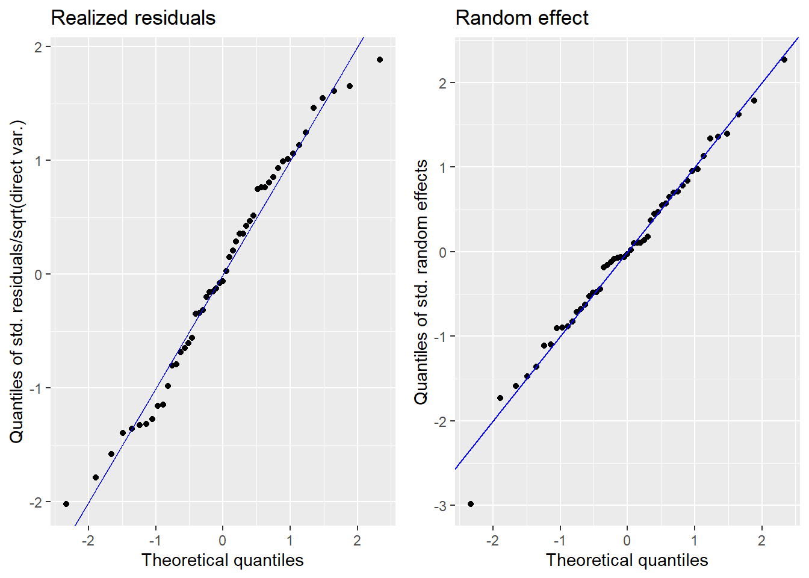
Press [enter] to continue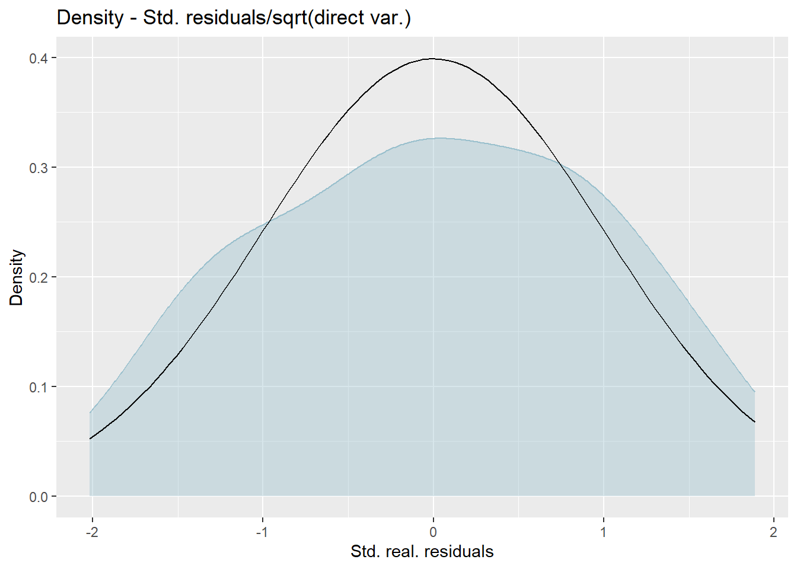
Press [enter] to continue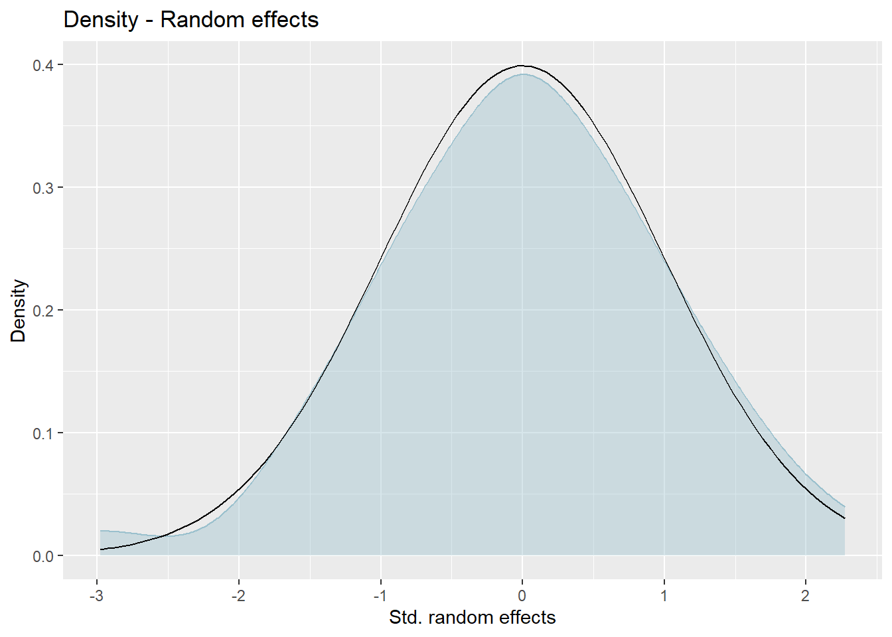
The plots show slight deviations of the distributions from normality. The normality assumption is not required for the computation of the FH estimates, but at the obtained MSE estimates we have to look with some care when the normality assumption does not hold.
2.6 Comparison of the FH results with the direct estimates.
The FH estimates are expected to align closely with the direct estimates in domains with small direct MSEs and/or large sample sizes. Moreover, incorporating auxiliary information should enhance the precision of the direct estimates. We produce a scatter plot proposed by Brown et al. (2001) and a line plot. The fitted regression and the identity line of the scatter plot should not differ too much. The FH estimates should track the direct estimates within the line plot especially for domains with a large sample size/small MSE of the direct estimator. Furthermore, we compare the MSE and CV estimates for the direct and FH estimators using boxplots and ordered scatter plots (by setting the input arguments MSE and CV to TRUE).
Additionally, we compute a correlation coefficient of the direct estimates and the estimates of the regression-synthetic part of the FH model (Chandra, Salvati, and Chambers 2015) and a goodness of fit diagnostic (Brown et al. 2001).
compare_plot(fh_model, MSE = TRUE, CV = TRUE)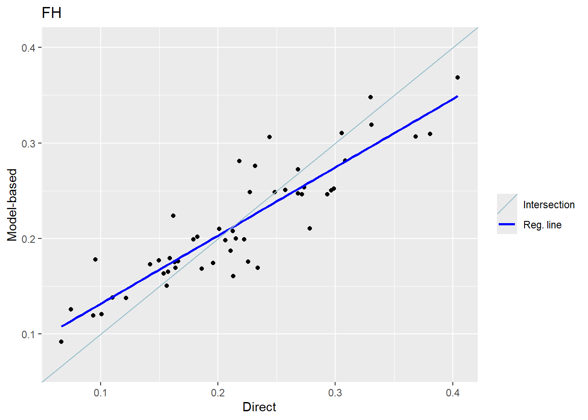
Press [enter] to continue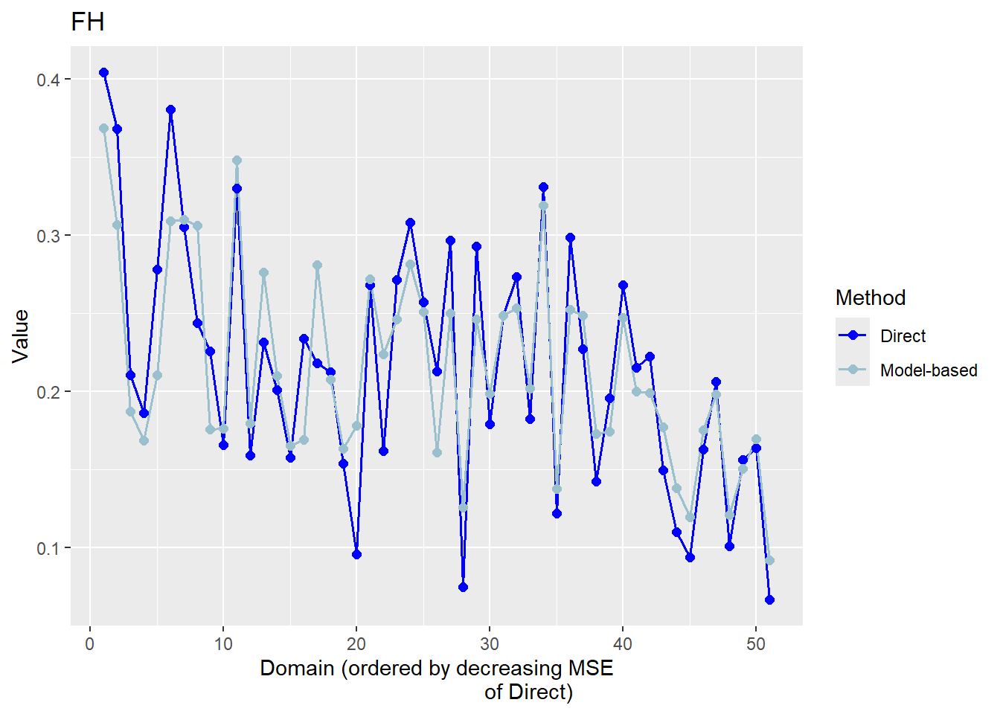
Press [enter] to continue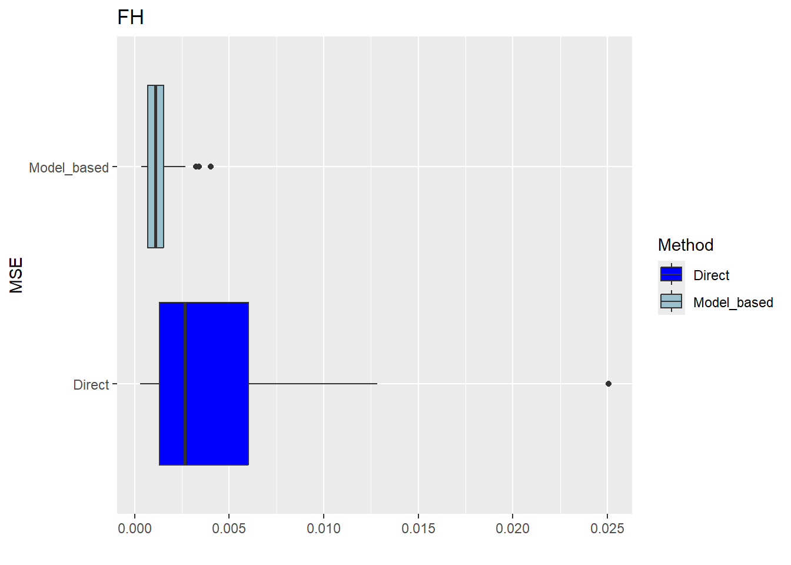
Press [enter] to continue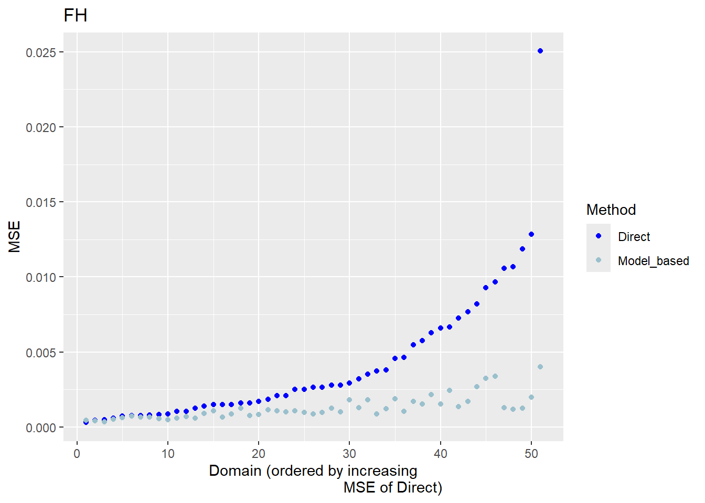
Press [enter] to continue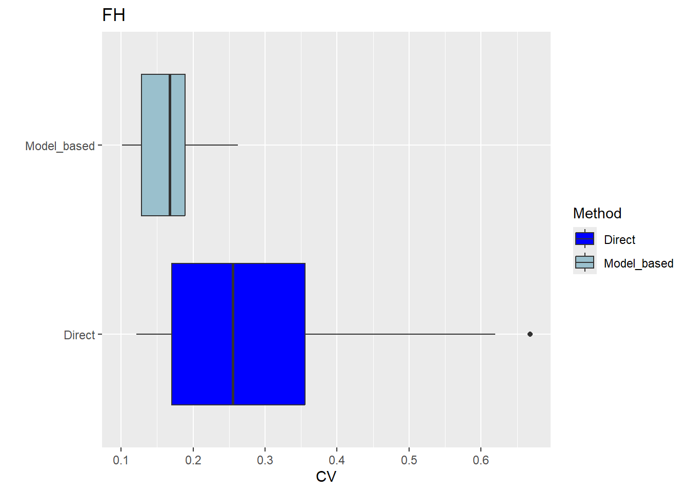
Press [enter] to continue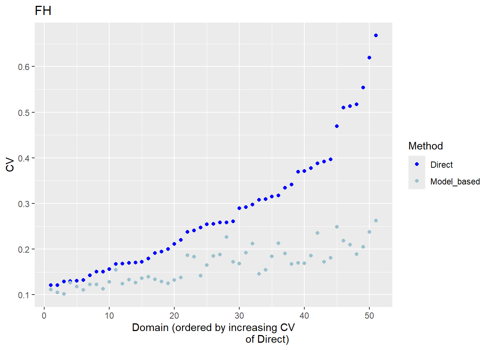
compare(fh_model)Brown test
Null hypothesis: EBLUP estimates do not differ significantly from the
direct estimates
W.value Df p.value
15.08585 51 0.9999998
Correlation between synthetic part and direct estimator: 0.72 The direct estimates are tracked by most of the FH estimates within the line plot. The precision of the direct estimates could be improved by the usage of the FH model in terms of MSEs and CVs. The null hypothesis of the Brown test is not rejected and the correlation coefficient indicates a positive correlation (0.66) between the direct and FH estimates.
If the result of the model assessment is not satisfactory, the following should be checked again: Can the direct estimation including variance estimation be improved? Are there further auxiliary variables and/or must possible interaction effects be taken into account? Does a (different) transformation need to be used?
2.7 Benchmark the FH point estimates for consistency with higher results.
Benchmarking is based on the principle that aggregated FH estimates should sum up to the estimates at a higher regional level. For the benchmark function, a benchmark value and a vector containing the shares of the population size per area (\(N_d/N\)) is required. Please note, that only the FH estimates are benchmarked and not their MSE estimates. As benchmark types “raking”, “ratio” and “MSE_adj” can be chosen. For further details about using the function, please refer to the emdi vignette and for general information about the benchmarking options to Datta et al. (2011).
## compute the benchmark value (mean of poverty indicator for the whole country)
benchmark_value <- weighted.mean(survey_dt$pov_indicator, survey_dt[[weight_var]])
## compute the share of population size in the total population size (N_d/N) per area
data("sizeprov")
fh_dt <- fh_dt |>
left_join(sizeprov |>
mutate(ratio_n = Nd/sum(Nd)), by = c("Domain" = area_vars[1]))
fh_bench <- benchmark(fh_model,
benchmark = benchmark_value,
share = fh_dt$ratio_n,
type = "ratio",
overwrite = TRUE)
head(fh_bench$ind) Domain Direct FH FH_Bench Out
1 1 0.24394059 0.3061689 0.3140667 0
2 2 0.15913215 0.1794998 0.1841301 0
3 3 0.16294054 0.1754708 0.1799972 0
4 4 0.29656922 0.2501263 0.2565784 0
5 5 0.09564252 0.1781981 0.1827949 0
6 6 0.22733200 0.2485626 0.2549744 02.8 Preparation of the results.
Create one dataframe that contains the direct and FH estimation results including MSE and CV results.
pov_fh <- as.data.frame(estimators(fh_model, MSE = TRUE, CV = TRUE))
head(pov_fh) Domain Direct Direct_MSE Direct_CV FH FH_MSE FH_CV
1 1 0.24394059 0.0081862422 0.3709012 0.3061689 0.0026749083 0.1689248
2 2 0.15913215 0.0065826888 0.5098515 0.1794998 0.0015381875 0.2184946
3 3 0.16294054 0.0007439151 0.1673912 0.1754708 0.0007341814 0.1544176
4 4 0.29656922 0.0024887140 0.1682137 0.2501263 0.0009681514 0.1243977
5 5 0.09564252 0.0035152460 0.6199074 0.1781981 0.0017924112 0.2375832
6 6 0.22733200 0.0014822014 0.1693531 0.2485626 0.0010867894 0.1326285pov_fh <- pov_fh |>
rename(!!area_vars[1] := "Domain") |>
mutate(year = singleyear)
bd_out |>
pin_write(x = pov_fh,
name = "pov_fh",
type = "rds")
write.csv(pov_fh, "data/clean-example/pov_fh.csv")2.8.1 Poverty map
With the help of geographical maps, the results can be presented in a user-friendly way and differences among the areas can be detected more easily. For the map, a shape file is reqired. The domain identifiers in the results object (fh_model) need to match to the respective identifiers of the shape file. Therefore, we create a mapping table first and then produce the map by emdi::map_plot.
## Create a suitable mapping table
## Find the right order
domain_ord <- match(shp_dt[[area_vars[1]]], fh_model$ind$Domain)
## Create the mapping table based on the order obtained above
map_tab <- data.frame(pop_data_id = fh_model$ind$Domain[domain_ord],
shape_id = shp_dt[[area_vars[1]]])
## Create map
map_plot(object = fh_model, MSE = TRUE, map_obj = shp_dt,
map_dom_id = area_vars[1], map_tab = map_tab)Press [enter] to continuePress [enter] to continuePress [enter] to continue
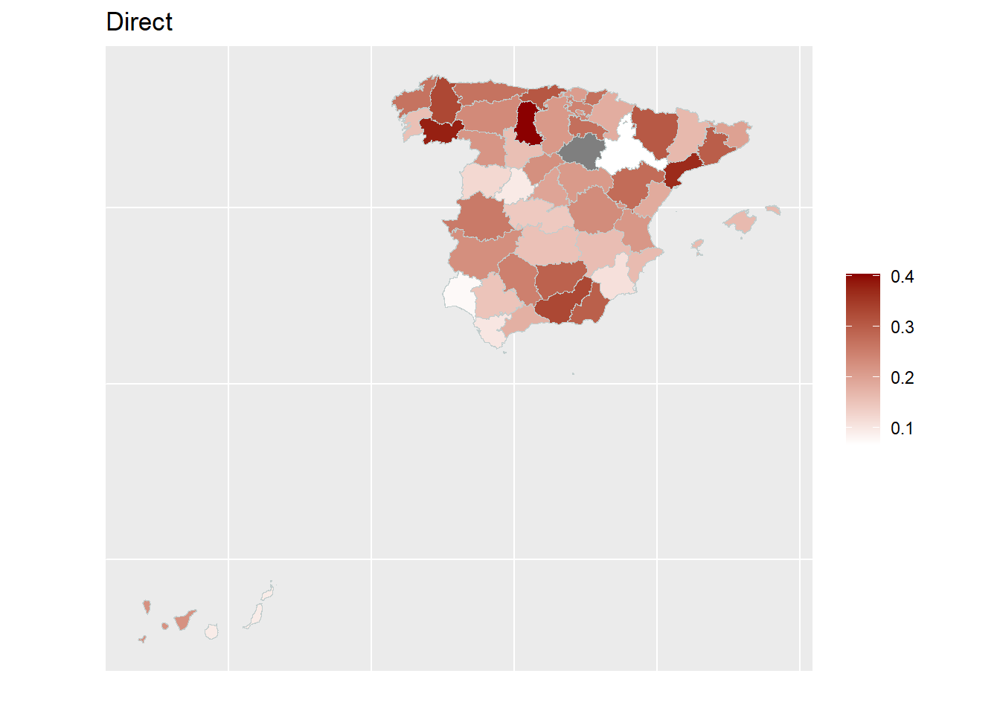
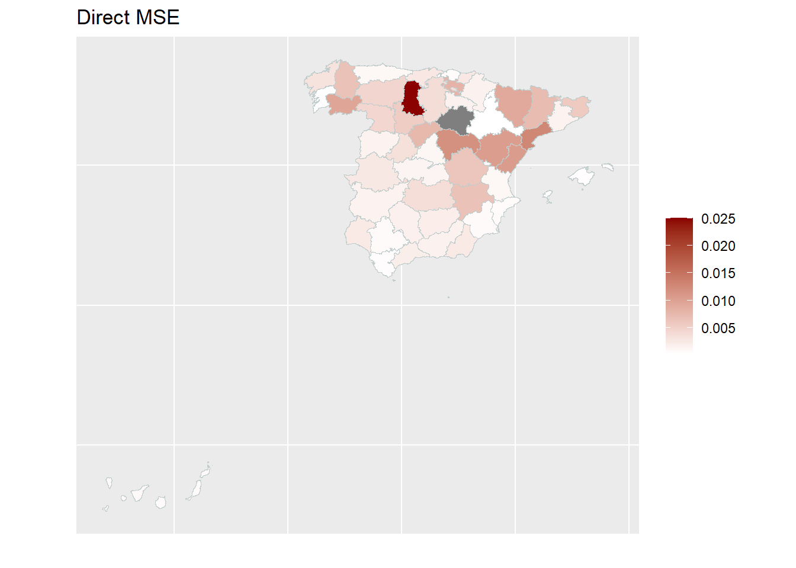
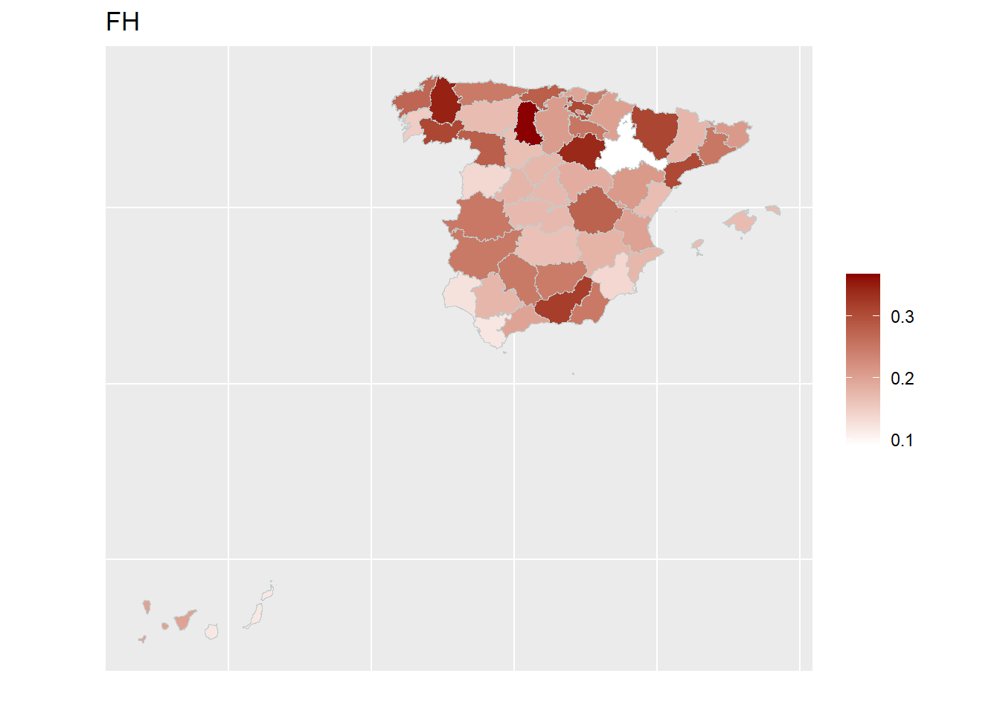
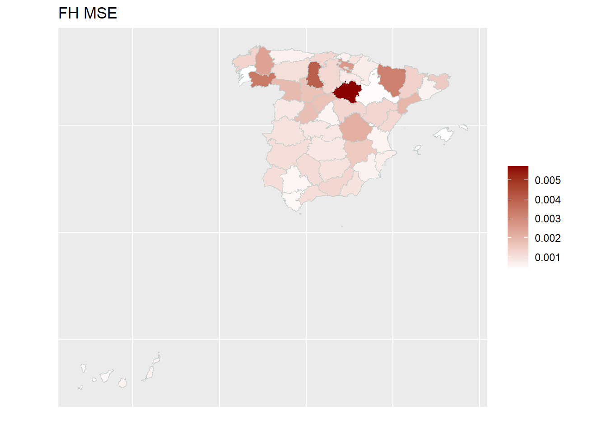
2.9 Saving the results.
Either by using save.image("fh_estimation.RData") or export of the model output and estimation results to Excel or OpenDocument spreadsheet (ODS) write.excel(fh_model, file = "fh_model_output.xlsx", MSE = TRUE, CV = TRUE.
2.10 References
Brown, G., R. Chambers, P. Heady, and D. Heasman. 2001. “Evaluation of Small Area Estimation Methods - an Application to Unemployment Estimates from the UK LFS.” In Proceedings of Statistics Canada Symposium.
Casas-Cordero, C., J. Encina, and P. Lahiri. 2016. “Poverty Mapping for the Chilean Comunas.” In Analysis of Poverty by Small Area Estimation, by M. Pratesi, 379–403. John Wiley & Sons. https://doi.org/10.1002/9781118814963.ch20.
Chandra, H., N. Salvati, and R. Chambers. 2015. “A Spatially Nonstationary Fay-Herriot Model for Small Area Estimation.” Journal of the Survey Statistics and Methodology 3 (2): 109–35. https://doi.org/10.1093/jssam/smu026.
Datta, G. S., M. Ghosh, R. Steorts, and J. Maples. 2011. “Bayesian Benchmarking with Applications to Small Area Estimation.” TEST 20 (3): 574–88. https://doi.org/10.1007/s11749-010-0218-y.
Fay, Robert E., and Roger A. Herriot. 1979. “Estimates of Income for Small Places: An Application of James-Stein Procedures to Census Data.” Journal of the American Statistical Association 74: 269–77.
Harmening, Sylvia, Ann-Kristin Kreutzmann, Sören Schmidt, Nicola Salvati, and Timo Schmid. 2023. “A Framework for Producing Small Area Estimates Based on Area-Level Models in r.” The R Journal 15 (1): 316–41. https://doi.org/10.32614/RJ-2023-039.
Komsta, Lukasz, and Frederick Novomestky. 2015. Moments: Moments, Cumulants, Skewness, Kurtosis and Related Tests. https://CRAN.R-project.org/package=moments.
Lahiri, P., and J. Suntornchost. 2015. “Variable Selection for Linear Mixed Models with Applications in Small Area Estimation.” The Indian Journal of Statistics 77-B (2): 312–20. https://www.jstor.org/stable/43694416.
Lumley, Thomas. 2024. “Survey: Analysis of Complex Survey Samples.”
Marhuenda, Y., D. Morales, and M. del Camen Pardo. 2014. “Information Criteria for Fay-Herriot Model Selection.” Computational Statistics and Data Analysis 70: 268–80. https://doi.org/10.1016/j.csda.2013.09.016.
Molina, Isabel, and Yolanda Marhuenda. 2015. “sae: An R Package for Small Area Estimation.” The R Journal 7 (1): 81–98. https://journal.r-project.org/archive/2015/RJ-2015-007/RJ-2015-007.pdf.
Rao, J. N. K., and Isabel Molina. 2015. Small Area Estimation. John Wiley; Sons, Inc, Hoboken, NJ, USA.
Schmid, T., F. Bruckschen, N. Salvati, and T. Zbiranski. 2017. “Constructing Sociodemographic Indicators for National Statistical Institutes Using Mobile Phone Data: Estimating Literacy Rates in Senegal.” Journal of the Royal Statistical Society A 180 (4): 1163–90. https://doi.org/10.1111/rssa.12305.
You, Yong, and Mike Hidiroglou. 2023. “Application of Sampling Variance Smoothing Methods for Small Area Proportion Estimation.” Journal of Official Statistics 39 (4): 571–90.